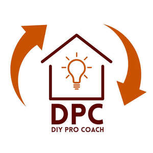
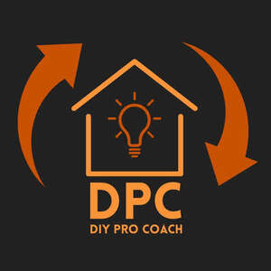
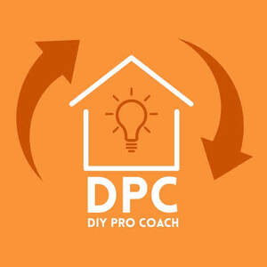

Trade Mark Journal No.2025/042 17 October 2025
UK00004272883 2 October 2025 (9,35,41,42)
Mark 1

Mark 2

Mark 3

- Class 9
- Downloadable electronic publications in the nature of guides in the field of do-it-yourself (DIY) projects and home renovations; mobile application software relating to do-it-yourself (DIY) projects and home renovations.
- Class 35
- Business consultancy and advisory services; management consultancy services; business management and organisation consultancy; provision of business information relating to do-it-yourself (DIY) projects; business advisory and consultancy services relating to the construction, improvement, and renovation of homes and buildings; advertising and promotional services relating to DIY products, tools, and services; compilation of directories for publishing on the Internet relating to suppliers of DIY materials and services; information, advisory and consultancy services relating to the aforesaid services. .
- Class 41
- Educational and training services; providing courses, workshops and seminars in the field of do-it-yourself (DIY) projects and home renovations; coaching and mentoring in relation to DIY skills and projects; providing online tutorials and instructional videos in the field of DIY; publication of educational materials and guides relating to DIY projects; non-downloadable electronic publications in the nature of guides, plans, instructions, and information relating to DIY projects; information, advisory and consultancy services relating to the aforesaid services.
- Class 42
- Advisory and consultancy services in the field of design, planning, and implementation of do-it-yourself (DIY) projects; online digital advisory and consultancy services in the field of design, planning, and implementation of do-it-yourself (DIY) projects; providing expert consultation in relation to interior and exterior design of buildings and homes; technical project planning and management for home improvement and DIY projects; design of plans, layouts and specifications for DIY building and renovation projects; providing information, advice and consultancy in relation to materials and methods for carrying out do-it-yourself (DIY) projects; hosting of online platforms featuring advice, plans, and tools for DIY enthusiasts; information, advisory and consultancy services relating to the aforesaid services.
Mr Timothy Moresby-White
Representative: Harper James Ltd